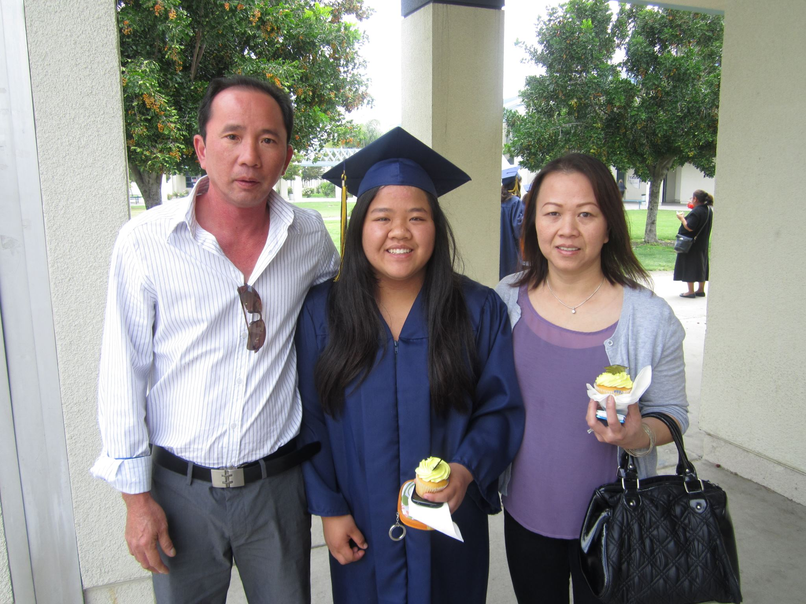

"Small acts, when multiplied by millions of people, can transfrom the world."
-Howard Zinn

Hello! Welcome to my website. My name is Lena Truong and I am a 5th year student studying business administration with a concentration on information systems at CSU Monterey Bay. Home of the Otters! I was born in Monterey Park, CA in 1994.
I grew up in South El Monte, CA located in the Los Angeles County, then moved to
Monterey Bay in 2012 to attend college.
In my free time I like to volunteer for various community service event, hike, play tennis and cook.
After college I aspire to be in a career that can financially support my dream to travel the world and do humanitarian work.
I have 3 main passions in life...
| Commnuity Service | Cooking | Traveling |  |
|---|


I started at CSU Monterey Bay (CSUMB) in 2012 as a freshman studying biology. In 2014 I decideded to change my studies to business administration. In 2016 I declared my concentration to be information systems. Through out my college career I have learned a lot and have grown as a person. The most rewarding thing in my college career was accepting a leadership role for the CSUMB Rotract Club. In 2014 I become the President of the service organization. As a club we serviced the community in various events and programs. Rotaract help to develope my leadership skill and made me realize my passion of helping people. I intent to graduate from CSUMB in May 2017 and continue to pursue my passion for helping people in the community.

I attended South El Monte High School (SEMHS) from 2009 to 2012. At SEMHS my studies was focused on a science path. In addition to school I also participated in may extracurricular activies such as:


The Osher Lifelong Learning Institute (OLLI) is a program at CSUMB that offers enrichment classes to people 55 or better. As the student assistant for the program work directly with the program director to support over 100 courses. Additionally I also plan programs, run classes, and perform basic budgeting and cashiering
The College of Extended Education (EE) is one of five colleges on the CSUMB campus. As the student asistant of non-credit programs I support the manager and system analyst in day-to-day task and projects. I also manage the EE transcript system.
I was the circulation desk assistant for the CSUMB library. My duties included asisting students and staff in finding books, answering main phone line, and using Voyager system to manage books. I was also in charge of organizing the book collection using the Library of Congress Classification system.
| Semester | Project Name | Description |
|---|---|---|
| Spring 2015 | Annual Zumbathon Fundraiser | Lead a committee that organized a Zumba marathon to raise funds to eradicate polio around the world |
| Spring 2016 | Small Business Information System Software Solution | Worked in a team project for Information Systems for Decision Making (BUS308) to create a solution to Verida Signs Studio |
| Fall 2016 | Asset Inventory Management System | Developed an Access based Asset Inventory Management System for the City of Monterey as a part of a Database Managment (BUS469) course |


This is my family! I have one sister that is three years older than me. Overall my family is very supportive.
These are my pets. My dog's name is T-Rex and my cat's name is Boots. T-Rex is 6 years old and Boots is 4 years old. Aren't they cute?


Please take a moment to answer the following questions about my website. Thank you!